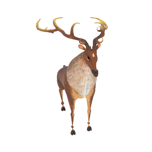

We present EditP23, a method for mask-free 3D editing that propagates 2D image edits to multi-view representations in a 3D-consistent manner. In contrast to traditional approaches that rely on text-based prompting or explicit spatial masks, EditP23 enables intuitive edits by conditioning on a pair of images: an original view and its user-edited counterpart. These image prompts are used to guide an edit-aware flow in the latent space of a pre-trained multi-view diffusion model, allowing the edit to be coherently propagated across views. Our method operates in a feed-forward manner, without optimization, and preserves the identity of the original object, in both structure and appearance. We demonstrate its effectiveness across a range of object categories and editing scenarios, achieving high fidelity to the source while requiring no manual masks.
Original

Pixar style


Wings


Original


Old


Zombie


Original


Fantasy


Original

Donut


Original


Donut


Original


Edited


Subfolder 1
Subfolder 2
Subfolder 3
Subfolder 4
Subfolder 5
Subfolder 6
Subfolder 7
Subfolder 8
Subfolder 9
Subfolder 10
Subfolder 11
Subfolder 12
Subfolder 13
Subfolder 14
Subfolder 15
Subfolder 16
Subfolder 17
Subfolder 18
Subfolder 19
Subfolder 20
Subfolder 21
Subfolder 22
Subfolder 23
BibTex Code Here